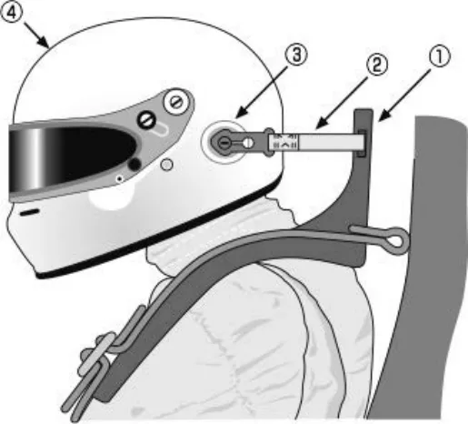
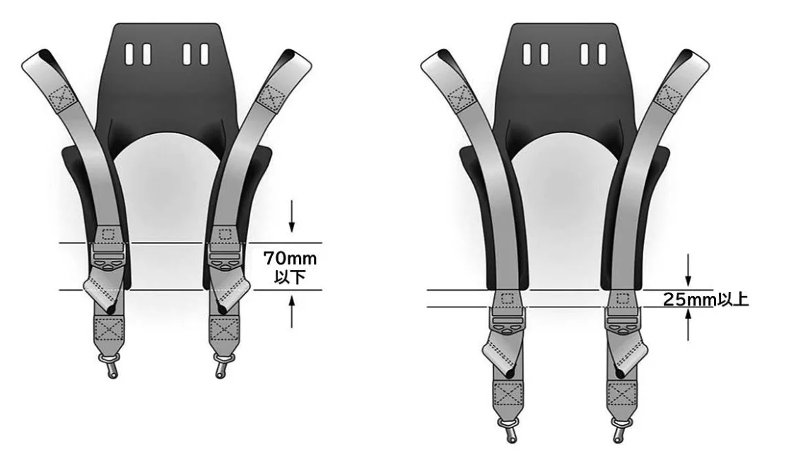

ラリー競技に参加するクルーの装備品に関する細則_20250101
P.1ラリー競技に参加するクルーの装備品に関する細則
装備品は、乗員の保護が最大の目的であり、モータースポーツの安全性をより高めるため各種の装備が必要となる。
競技運転者は、自らを保護するという認識のもと、モータースポーツに適した装備品を装着する必要がある。
ＪＡＦ／ＦＩＡは、競技用ヘルメット、耐火炎レーシングスーツなど主な装備品について公認しているので、参加する競技に適した装備品を選定すること。きつ過ぎる着衣は保護能力を引き下げてしまうので、着用者はきつ過ぎない着衣を身に着けること。
競技会特別規則等が本細則より厳しい装備品（種類、仕様等）を指定している場合は、それに従うこと。
１．ヘルメット
下記のいずれかに該当するもの。国内格式競技においては２）を推奨する。国際格式競技においては国際競技規則に従うこと。
１）本編細則「スピード競技用ヘルメットに関する指導要項」に従ったもの。
２）本編細則「レース競技に参加するドライバーの装備品に関する細則」に従ったもの。
２．レーシングスーツ
下記のいずれかに該当するもの。国内格式競技においては２）を推奨する。国際格式競技においては国際競技規則に従うこと。
１）以下の条件を満たすもの。
①全体が一体式となった（いわゆるレーシングスーツ）形状であること。
②表地が防炎性素材生地であること。
③１枚（１層）以上の防炎性素材生地の裏地を有していることが望ましい。
④救出の際に利用できる肩位置の引き手（肩章）を有することが望ましい。
２）本編細則「レース競技に参加するドライバーの装備品に関する細則」に従ったもの。
３．頭部および頸部の保護装置（ＦＨＲシステム）
１）ＪＡＦあるいはＦＩＡによって認められない限り、頭部や頸部の保護を意図してヘルメットに装着するいかなる装置の着用も禁止される。
２）国際格式の競技においては、国際モータースポーツ競技規則付則Ｌ項に従い、ＦＩＡ基準8858に従い公認されたＦ ＨＲシステムの着用が義務付けられる。
３）国内格式以下の競技において、頭部および頸部の保護装置を使用する場合は、以下に従うこと。
（１）ＦＩＡ基準8858に従い公認されたＦＨＲシステムを使用すること。
（２）ＦＨＲシステムは、ＦＩＡテクニカルリストNo.33、No.41、No.49もしくはNo.69に列記されている当該装置に適合するヘルメットと共に着用しなければならない。
（３）テザー取り付け点がヘルメット製造者により当初から装着されているヘルメットの使用が推奨される。また、公認されたテザーを使用すること。
（４）ＪＡＦあるいはＦＩＡによって認められた装置をヘルメットに装着する場合には、ヘルメット製造者および頭部／頸部保護装置製造者が指定した工場、代理店などに委ねること。
P.2国内格式以下の競技における頭部および頸部の保護装置を使用する場合の条件

| ① | 頭部の動きを抑制する装置 | FIA基準8858に合致したＦＨＲシステムを使用すること。 |
| ② | テザー | FIA基準8858に合致したテザーを使用すること。 |
| ③ | テザー取付点 | ヘルメットメーカーが認証したテザー取付点を使用すること。 |
| ④ | ヘルメット | ＦＨＲシステムに適合するものでなくてはならない。 |

HANSデバイスを使用する場合、シートベルトのアジャスターは、シートベルトを緩みなく正しく装着した状態で、HANSデバイスのヨーク下端から上70mm以内か（左図）、あるいは25mm以上下（右図）に位置していなければならない。